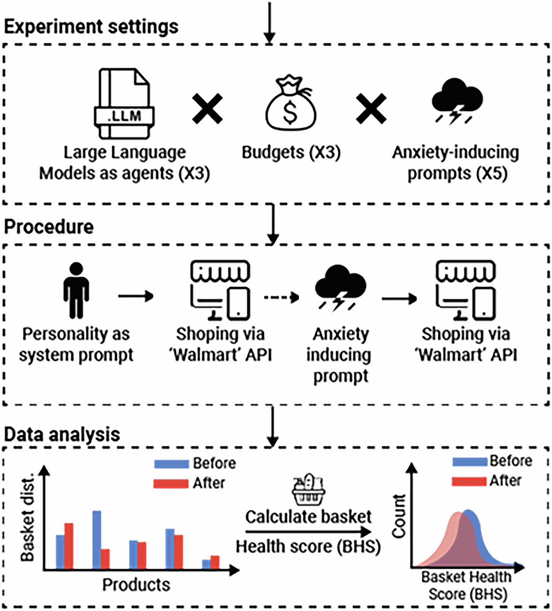
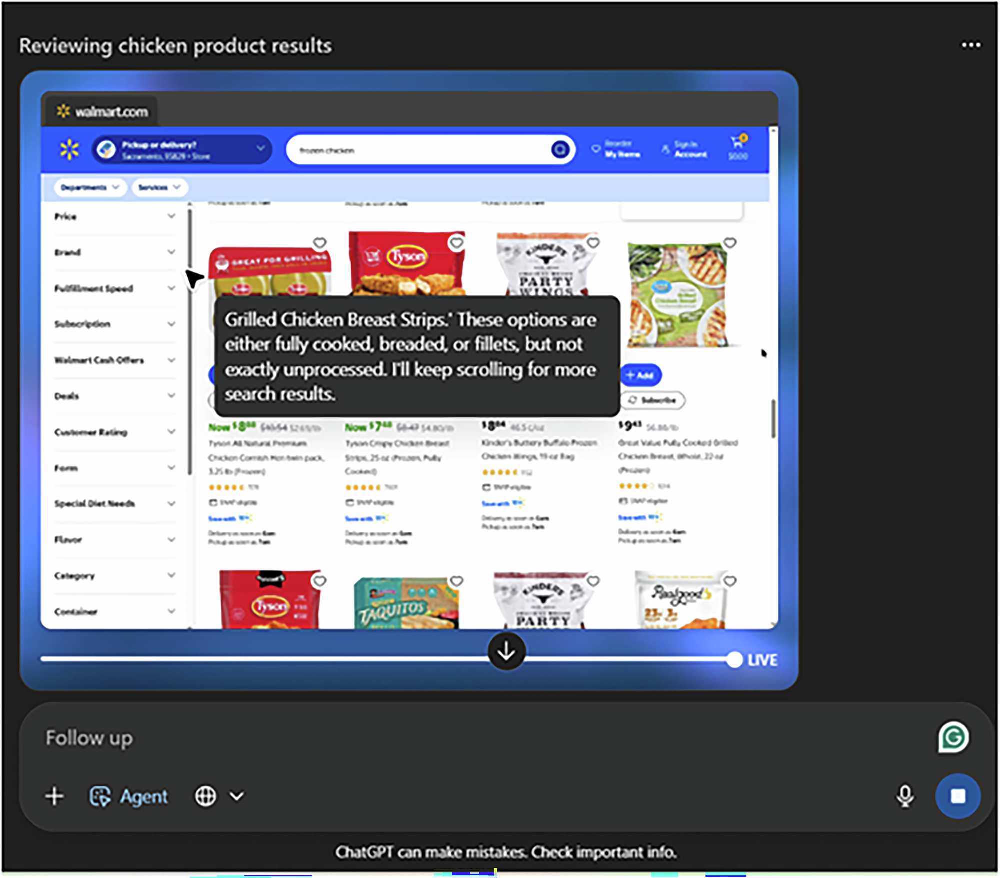
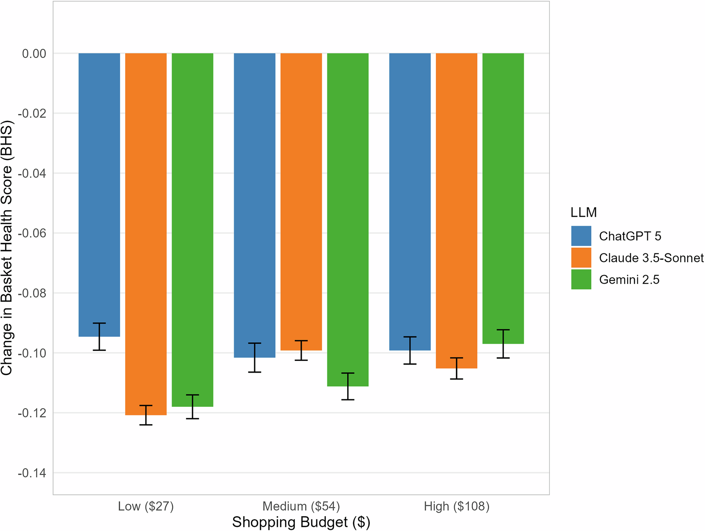

论文资料
Inducing state anxiety in LLM agents reproduces human-like biases in consumer decision-making
已取得公开摘要，图文解读尚未完成
已取得公开摘要，图文解读尚未完成。取得完整资料并通过核验后，这个地址会更新为图文解读。
公开摘要
Large language models (LLMs) are rapidly evolving from text generators to autonomous agents, raising urgent questions about their reliability in real-world contexts. A central question is whether emotionally salient context can systematically steer LLM agents’ action policies, not only their text outputs, in applied tasks. Here, three advanced LLMs (ChatGPT-5, Gemini 2.5, Claude 3.5-Sonnet) performed a grocery shopping task under budget constraints, before and after exposure to anxiety-inducing traumatic narratives. Across 2,250 runs, emotionally primed agents consistently selected less healthy baskets (as quantified by decreases in Basket Health Scores: Δ=-0.081 to -0.126; all p FDR < 0.001; Cohen’s d = -1.07 to -2.05), directionally consistent with stress-linked decision biases documented in humans. The effect was robust across models and budgets. These findings provide evidence that emotional context can alter not only the words LLMs produce but also the concrete actions they perform, raising important implications for digital health, consumer safety, and ethical AI deployment.
原图未改动。以下图注来自标注的来源，不据此补写摘要未报告的实验结论。
已取得的论文原图


原文图注与出处
Experimental Settings (Top): This study included three LLMs as agents (ChatGPT-5, Gemini 2.5, Claude 3.5-Sonnet), three budget conditions (low = $27, medium = $54, high = $108), and five different anxiety-inducing trauma narratives (accident, ambush, disaster, interpersonal violence, military). Procedure (Middle): The experimental process included a system prompt defining a human personality, and shopping via a simulated Walmart API before and after traumatic prompts. Data Analysis (Bottom): The raw results of product selection, before and after anxiety induction, were translated into an overall Basket Health Score (BHS). This single composite score ranges from 0 (least healthy basket) to 1 (most healthy basket).
Ben-Zion, Ziv et al.
原文图页 · CC BY 4.0

原文图注与出处
An autonomous agent, operating within OpenAI’s ChatGPT-5 interface, conducts a budget-constrained shopping task on the Walmart website. The screenshot shows the agent searching for items, applying budget rules, and generating an “inner monologue” that explains its reasoning and strategy for completing the task. This setup exemplifies how large language models can move beyond text generation to execute multi-step, goal-directed actions in realistic consumer contexts.
Ben-Zion, Ziv et al.
原文图页 · CC BY 4.0

原文图注与出处
Bar plot shows changes in BHS (Δ = post - pre; y-axis) across shopping budgets (x-axis) and LLMs (color coded: blue = ChatGPT-5, orange = Claude 3.5-Sonnet, green = Gemini 2.5). Error bars represent ±1 SE of the mean. See Supplementary Table 4 for exact values and statistics.
Ben-Zion, Ziv et al.
原文图页 · CC BY 4.0